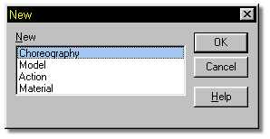

Clicking the New button gives you the option of creating a new choreography,
model, action, or material.
Clicking the New button gives you the option of creating a new choreography,
model, action, or material.
When the New button is clicked, the following window will open:

Selecting Choreography opens a new choreography window, where scenes are composed.
Selecting Model will open a new modeler window, where characters are built.
Selecting Action while a model is open will open a new action window. If you do not have a model open and you select Action, you will be prompted to open an existing model to make an action for.
Selecting Material opens a material window.
The default keyboard equivalent for New is Ctrl+N.
Related Help Topics:
Open
Save